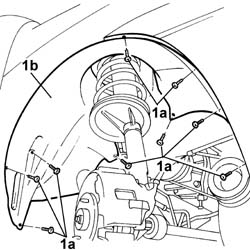

7055B64 Engine compartment DUST shield in front wheel arch (one), left or right - R.R.
- Path
- Procedures > 70 FITTINGS > 7055 MOULDING AND PROTECTION > 7055B exterior protections > 7055B64 Engine compartment DUST shield in front wheel arch (one), left or right - R.R.
- Kind
- repair procedure (removal / refitting; the operation number is the code)
- Applies to
- all engines; all production periods
- Interactive page
- https://sloeber94.github.io/elrnDB-fDbl/en/#/2585222
Applies to: all engines; all production periods
 Removing
Removing
 Refitting
RefittingPlace the car on a ramp.
Raise the ramp.
1. Undo the fixing nuts (1a) and remove the dust cover (1b).

Applies to: all engines; all production periods
Refitting
RemovingPosition the dust cover and secure it using the nuts.
Lower the lift and remove the car.
Topics that link to this page (11)
- 1004B10 POWER UNIT WITH MANUAL GEARBOX - R.R
- 1016C11 single cylinder head-r r gasket for versions with air conditioner
- 1028H20 piston with connecting rod - r r
- 1032C19 mobile timing belt tensioner - r r for versions with air conditioner
- 1092D10 air conditioner compressor drive belt - r + r
- 4130A13 POWER ASSISTED STEERING BOX - R.R. - If necessary. check wheel toe in separately - Includes. bleeding air - on right hand drive versions
- 5040A20 air conditioner compressor - r+r - includes fluid level check and top up if necessary
- 5040A26 compressor mount - r r
- 5050A10 windscreen washer fluid reservoir (in engine bay) - r+r
- 5050B20 windscreen washer electrical pump - r+r
- 5505C26 bonnet wiring - r r